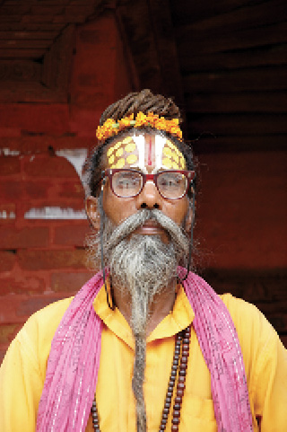

HİNDİSTAN, 30 Ağustos
Gerçek bir Sadhu göremeden eve dönmüş olacağız sanırım. Nepal ve Hindistan’da sadece turistlerle fotoğraf çektirmeye yarayan Sadhu benzeri insanlar gördük, ancak bunlar Sadhu muydu tam anlayamadık. Sadhular arayış içinde olan, dünyadan ve dünya malından vazgeçmiş dervişler. Aralarında saçlarını hiç yıkamayanlar var. Bu halde ve yarı çıplak gezen herkes Sadhu mu? Elbette hayır. Bu durum biraz da sektör olmuş durumda, dilenciler de bu şekilde geziyorlar. Bugün dış görünüş olarak Sadhu’ya benzeyen bir kişiyi polis sopayla vurarak yanımdan uzaklaştırdı. Bağırarak sahtekâr olduğunu söyledi. Gerçek bir Sadhu’ya değil vurmayı, bunu aklından geçirebileceğini bile sanmıyorum. Nerede bir derbeder adam görsek Sadhu mu diye bakıyoruz. Ama çoğunun bu şekilde gezmelerinin sebebi din dışı nedenler gibi görünüyor.
Hindistan’da bile kıyafet bulmanın çok sorun olacağını sanmadığımdan bunların çoğunun dilenci olduğunu veya akli dengelerinin yerinde olmadığını çıkarsamak yanlış olmaz. Kıyafet dediğim, belden aşağısını örten, oradan omuzlara doğru atılmış uzun bir kumaştan ibaret. Bu hali hiç gözümün önünden gitmeyen Büyük Ruh Mahatma Gandhi’nin giyinişi hep aklımda kalmıştır. Asası ve sandaletleriyle İngiltere’ye isyan eden büyük kahraman.
Kadınlara gelince, onların kıyafetleri de ilginç. Özellikle yaşları ilerlemiş kadınlar çok renkli. Buradaki kadınlar da genellikle bel bölgeleri açıkta geziyorlar. Yaşlı kadınlarda da durum değişmiyor. Bu kadar sıcak ve nemli bir iklimde başka bir şey giymelerini beklemek de zaten abes.

Nepal, Katmandu.
Gerçek Sadhu mu, yoksa bir fotoğraf objesi mi?